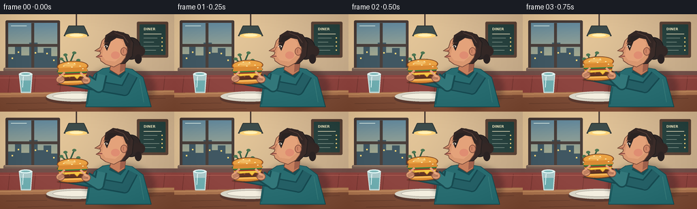
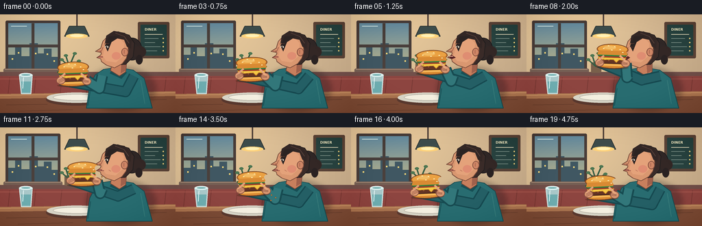
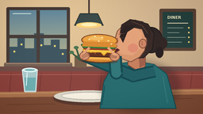
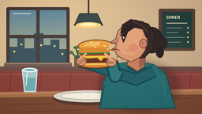

CODING AGENTS AS PIXEL WORLD MODELS
traex/GPT-5.6-Sol · motion_rationality_0001
点击播放 · 原生 RGB 像素
逐轮保存的候选
回放视频、检查图与代码变化。
每份候选均可单独播放。实际图片检查记录在下方工具轨迹中。
候选 01播放与检查图
点击播放 · 原生 RGB 像素


展开代码变化
--- 上一保存版本
+++ 本次保存版本
@@ -0,0 +1,375 @@
+from pathlib import Path
+import math
+
+import numpy as np
+from PIL import Image, ImageDraw, ImageFilter, ImageFont
+
+import artifact_io
+
+
+W, H, N = 256, 144, 20
+S = 4
+
+
+def sc(v):
+ return int(round(v * S))
+
+
+def pts(seq):
+ return [(sc(x), sc(y)) for x, y in seq]
+
+
+def ellipse(draw, box, fill, outline=None, width=1):
+ draw.ellipse(tuple(sc(v) for v in box), fill=fill, outline=outline, width=sc(width) if outline else 1)
+
+
+def rect(draw, box, fill, outline=None, width=1, radius=0):
+ b = tuple(sc(v) for v in box)
+ if radius:
+ draw.rounded_rectangle(b, radius=sc(radius), fill=fill, outline=outline,
+ width=sc(width) if outline else 1)
+ else:
+ draw.rectangle(b, fill=fill, outline=outline, width=sc(width) if outline else 1)
+
+
+def polygon(draw, seq, fill, outline=None, width=1):
+ p = pts(seq)
+ draw.polygon(p, fill=fill)
+ if outline:
+ draw.line(p + [p[0]], fill=outline, width=sc(width), joint="curve")
+
+
+def line(draw, seq, fill, width=1, joint="curve"):
+ draw.line(pts(seq), fill=fill, width=sc(width), joint=joint)
+
+
+def font(size, bold=False):
+ path = "/usr/share/fonts/truetype/dejavu/DejaVuSans%s.ttf" % ("-Bold" if bold else "")
+ try:
+ return ImageFont.truetype(path, sc(size))
+ except OSError:
+ return ImageFont.load_default()
+
+
+def background():
+ """A warm, detailed but unobtrusive diner interior."""
+ yy, xx = np.mgrid[0:H * S, 0:W * S]
+ glow = np.exp(-((xx - 68 * S) ** 2 + (yy - 45 * S) ** 2) / (2 * (82 * S) ** 2))
+ base = np.empty((H * S, W * S, 3), dtype=np.float32)
+ base[:] = (205, 177, 143)
+ base += glow[..., None] * np.array([27, 24, 12])[None, None, :]
+ base -= (yy[..., None] / (H * S)) * np.array([16, 13, 10])[None, None, :]
+ im = Image.fromarray(np.uint8(np.clip(base, 0, 255)), "RGB")
+ d = ImageDraw.Draw(im)
+
+ # Window and its dusk skyline.
+ rect(d, (8, 9, 88, 83), "#493d39", radius=2)
+ rect(d, (12, 13, 84, 79), "#758d98")
+ for y in range(13, 79):
+ q = (y - 13) / 66
+ c = (int(102 + 82 * q), int(139 + 39 * q), int(158 - 20 * q))
+ d.line([(sc(12), sc(y)), (sc(84), sc(y))], fill=c, width=S)
+ # distant buildings
+ polygon(d, [(12, 59), (22, 59), (22, 48), (31, 48), (31, 61), (43, 61),
+ (43, 42), (55, 42), (55, 57), (64, 57), (64, 50), (75, 50),
+ (75, 62), (84, 62), (84, 79), (12, 79)], "#405762")
+ for x, y in [(17, 64), (26, 55), (47, 49), (51, 56), (68, 57), (78, 67)]:
+ rect(d, (x, y, x + 2, y + 2), "#ffd978")
+ rect(d, (46, 13, 50, 79), "#4a403c")
+ rect(d, (12, 44, 84, 48), "#4a403c")
+ # Window highlight and sill.
+ line(d, [(16, 17), (39, 17)], (211, 231, 226), 1)
+ rect(d, (5, 79, 91, 85), "#766055", radius=2)
+ line(d, [(7, 80), (89, 80)], "#a88c76", 1)
+
+ # Pendant lamp.
+ line(d, [(112, 0), (112, 17)], "#4a3b36", 2)
+ polygon(d, [(101, 17), (123, 17), (130, 32), (94, 32)], "#3d4c4b", "#2b3332", 1)
+ ellipse(d, (96, 28, 128, 35), "#ffd27a")
+ ellipse(d, (102, 29, 122, 33), "#fff0b5")
+
+ # Menu board and tiny chalk marks.
+ rect(d, (201, 11, 247, 64), "#5b4438", radius=2)
+ rect(d, (205, 15, 243, 60), "#294340", radius=1)
+ d.text((sc(211), sc(19)), "DINER", font=font(5, True), fill="#efe5bd")
+ line(d, [(211, 29), (237, 29)], "#d7ceb0", 1)
+ for y, length in [(35, 20), (41, 15), (47, 23), (53, 18)]:
+ line(d, [(211, y), (211 + length, y)], "#b8c7b8", .6)
+ ellipse(d, (237, y - 1, 239, y + 1), "#e8c977")
+
+ # Wooden rail, upholstered booth and seams.
+ rect(d, (0, 84, 256, 90), "#71504a")
+ rect(d, (0, 90, 256, 123), "#8d4540")
+ for x in range(14, 256, 38):
+ line(d, [(x, 92), (x - 3, 121)], "#763934", 1)
+ line(d, [(0, 94), (256, 94)], "#a95a51", 1)
+
+ # Small plant at far left.
+ rect(d, (94, 70, 109, 85), "#79604b", radius=2)
+ for a, b, c, e in [(101, 73, 96, 60), (103, 73, 109, 57), (100, 74, 90, 66), (104, 75, 115, 68)]:
+ line(d, [(101, 76), (c, e)], "#355d43", 2)
+ ellipse(d, (c - 3, e - 2, c + 3, e + 2), "#4d7652")
+
+ # Table, with a soft highlight and edge.
+ polygon(d, [(0, 116), (256, 112), (256, 144), (0, 144)], "#7c4d38")
+ polygon(d, [(0, 116), (256, 112), (256, 119), (0, 123)], "#aa7551")
+ line(d, [(0, 118), (256, 114)], "#d19b6b", 1)
+ # Grain.
+ for q in [(9, 132, 69, 131), (169, 126, 243, 124), (26, 141, 106, 139)]:
+ line(d, [(q[0], q[1]), (q[2], q[3])], "#68402f", 1)
+
+ # Plate, napkin, and water glass anchor the food action.
+ ellipse(d, (67, 116, 154, 133), "#5b3b31")
+ ellipse(d, (68, 114, 155, 129), "#d9d6c8")
+ ellipse(d, (77, 116, 147, 126), "#f4efe0", "#b9b4a8", 1)
+ polygon(d, [(160, 117), (198, 115), (203, 127), (164, 130)], "#e1d7c4")
+ line(d, [(165, 120), (198, 118)], "#c8bda9", 1)
+ # glass at left
+ polygon(d, [(28, 88), (47, 88), (45, 116), (31, 116)], "#aac9ca", "#d9efeb", 1)
+ polygon(d, [(31, 98), (45, 98), (44, 114), (32, 114)], "#6faeb1")
+ ellipse(d, (28, 85.5, 47, 91), "#d9efeb", "#ecffff", 1)
+ ellipse(d, (31, 87, 44, 89.5), "#80b8b9")
+ line(d, [(34, 92), (33, 108)], "#efffff", 1)
+ return im
+
+
+BG = background()
+
+
+def make_burger(bit=False):
+ """Draw a compact, richly layered hamburger on a transparent tile."""
+ tw, th = sc(64), sc(48)
+ tile = Image.new("RGBA", (tw, th), (0, 0, 0, 0))
+ d = ImageDraw.Draw(tile)
+ cx, cy = 31, 23
+ # Contact shadow under the bun.
+ ellipse(d, (cx - 24, cy + 10, cx + 24, cy + 16), (82, 39, 20, 100))
+ # bottom bun
+ ellipse(d, (cx - 22, cy + 5, cx + 22, cy + 15), "#d98932", "#733c22", 1)
+ rect(d, (cx - 20, cy + 5, cx + 20, cy + 11), "#efaa48")
+ line(d, [(cx - 17, cy + 10), (cx + 17, cy + 10)], "#f7c069", 1)
+ # beef patty with seared flecks
+ rect(d, (cx - 22, cy + 1, cx + 22, cy + 8), "#633323", "#3e241b", 1, 2)
+ for x in [-16, -6, 5, 14]:
+ ellipse(d, (cx + x, cy + 3, cx + x + 2, cy + 4), "#9b5b37")
+ # cheese hangs over the patty.
+ polygon(d, [(cx - 20, cy - 2), (cx + 20, cy - 2), (cx + 18, cy + 3),
+ (cx + 10, cy + 2), (cx + 6, cy + 6), (cx + 2, cy + 2),
+ (cx - 20, cy + 3)], "#f5c744", "#c88726", 1)
+ # tomato and lettuce curls.
+ rect(d, (cx - 20, cy - 5, cx + 20, cy - 1), "#c94a32", "#873124", 1, 2)
+ polygon(d, [(cx - 23, cy - 7), (cx - 17, cy - 10), (cx - 10, cy - 7),
+ (cx - 3, cy - 9), (cx + 5, cy - 6), (cx + 12, cy - 9),
+ (cx + 22, cy - 7), (cx + 19, cy - 3), (cx - 20, cy - 3)],
+ "#4d8a3f", "#315c32", 1)
+ # top bun dome and warm highlight.
+ ellipse(d, (cx - 23, cy - 21, cx + 23, cy - 5), "#c87529", "#754020", 1)
+ ellipse(d, (cx - 21, cy - 20, cx + 21, cy - 7), "#eaa142")
+ polygon(d, [(cx - 20, cy - 11), (cx + 20, cy - 11), (cx + 22, cy - 5),
+ (cx - 22, cy - 5)], "#d98a33")
+ ellipse(d, (cx - 13, cy - 18, cx + 5, cy - 13), "#f2bb63")
+ for x, y, a in [(-13, -14, -15), (-6, -18, 10), (3, -17, -8), (11, -13, 15), (15, -9, -5), (-1, -12, 12)]:
+ # tiny sesame grains
+ ellipse(d, (cx + x - 1.2, cy + y - .5, cx + x + 1.2, cy + y + .5), "#fff0b6")
+
+ if bit:
+ # A scalloped, unmistakable bite missing from the side which met the mouth.
+ alpha = tile.getchannel("A")
+ ad = ImageDraw.Draw(alpha)
+ for bx, by, r in [(52, 12, 4.2), (53, 19, 4.5), (52, 26, 4.0)]:
+ ad.ellipse((sc(bx - r), sc(by - r), sc(bx + r), sc(by + r)), fill=0)
+ tile.putalpha(alpha)
+ return tile
+
+
+BURGER = make_burger(False)
+BITTEN_BURGER = make_burger(True)
+
+
+def interp_key(i, keys):
+ for j in range(len(keys) - 1):
+ a, va = keys[j]
+ b, vb = keys[j + 1]
+ if a <= i <= b:
+ z = (i - a) / (b - a) if b > a else 0
+ z = z * z * (3 - 2 * z)
+ return va + (vb - va) * z
+ return keys[-1][1]
+
+
+def draw_person(frame, i, bx, by):
+ d = ImageDraw.Draw(frame)
+ lift = max(0, min(1, (91 - by) / 26))
+ contact = math.exp(-((i - 8.4) / 2.25) ** 2)
+ bitten = i >= 11
+ head_dx = -2.1 * contact
+
+ # Person's cast shadow on the booth.
+ sh = Image.new("RGBA", frame.size, (0, 0, 0, 0))
+ sd = ImageDraw.Draw(sh)
+ ellipse(sd, (126, 77, 227, 140), (40, 27, 30, 85))
+ sh = sh.filter(ImageFilter.GaussianBlur(sc(4)))
+ frame.paste(sh, (0, 0), sh)
+ d = ImageDraw.Draw(frame)
+
+ # Torso and collar, seated in profile.
+ polygon(d, [(151, 80), (171, 77), (194, 81), (210, 93), (222, 137),
+ (126, 137), (131, 103), (139, 88)], "#286c70", "#184b50", 1)
+ polygon(d, [(164, 80), (177, 79), (185, 85), (177, 94), (160, 86)], "#174f55")
+ line(d, [(205, 96), (211, 130)], "#397c7b", 1)
+ line(d, [(132, 108), (128, 133)], "#174f55", 1)
+
+ # Neck, behind the jaw.
+ polygon(d, [(165 + head_dx, 67), (185 + head_dx, 66), (183, 84),
+ (174, 90), (161, 82)], "#c77f5d", "#704536", 1)
+ polygon(d, [(177 + head_dx, 70), (185 + head_dx, 67), (183, 82), (176, 86)], "#9f604b")
+
+ # Far arm: its elbow rises naturally while the burger is lifted.
+ far_elbow = (183 - 15 * lift, 113 - 17 * lift)
+ far_hand = (bx - 20, by + 5)
+ line(d, [(195, 90), far_elbow, far_hand], "#164950", 16)
+ line(d, [(195, 90), far_elbow, far_hand], "#245f65", 12)
+ ellipse(d, (far_elbow[0] - 6, far_elbow[1] - 6, far_elbow[0] + 6, far_elbow[1] + 6), "#245f65")
+ # cuff
+ line(d, [(far_hand[0] + 7, far_hand[1] + 2), far_hand], "#153f46", 9)
+
+ # Hair mass, ponytail, then face. All shift in the slight bite lean.
+ ellipse(d, (178 + head_dx, 34, 207 + head_dx, 67), "#302726", "#1d1b1d", 1)
+ ellipse(d, (194 + head_dx, 46, 213 + head_dx, 63), "#332725")
+ ellipse(d, (198 + head_dx, 59, 208 + head_dx, 73), "#2a2222")
+ polygon(d, [(172 + head_dx, 25), (188 + head_dx, 30), (196 + head_dx, 42),
+ (194 + head_dx, 62), (183 + head_dx, 73), (165 + head_dx, 74),
+ (153 + head_dx, 64), (150 + head_dx, 46), (156 + head_dx, 31)],
+ "#3a2b28", "#211d1d", 1)
+ # Face profile with visible nose, lips and chin.
+ polygon(d, [(164 + head_dx, 31), (177 + head_dx, 32), (185 + head_dx, 39),
+ (187 + head_dx, 52), (184 + head_dx, 64), (178 + head_dx, 72),
+ (167 + head_dx, 78), (155 + head_dx, 74), (148 + head_dx, 69),
+ (147 + head_dx, 65), (141 + head_dx, 63), (147 + head_dx, 59),
+ (148 + head_dx, 56), (139 + head_dx, 54), (147 + head_dx, 49),
+ (150 + head_dx, 39), (156 + head_dx, 33)],
+ "#d99770", "#704536", 1)
+ # Face light and cheek warmth.
+ polygon(d, [(159 + head_dx, 34), (174 + head_dx, 35), (181 + head_dx, 42),
+ (179 + head_dx, 61), (169 + head_dx, 70), (155 + head_dx, 68),
+ (150 + head_dx, 61), (153 + head_dx, 48)], "#e4a27a")
+ ellipse(d, (163 + head_dx, 55, 176 + head_dx, 66), "#df8d72")
+ ellipse(d, (177 + head_dx, 49, 187 + head_dx, 61), "#ce8666", "#814d3d", 1)
+ line(d, [(181 + head_dx, 52), (181 + head_dx, 57)], "#a8644e", 1)
+ # Hair cap and side lock.
+ polygon(d, [(153 + head_dx, 42), (155 + head_dx, 31), (166 + head_dx, 24),
+ (182 + head_dx, 27), (192 + head_dx, 38), (191 + head_dx, 50),
+ (185 + head_dx, 47), (181 + head_dx, 37), (171 + head_dx, 35),
+ (163 + head_dx, 40)], "#332725")
+ polygon(d, [(159 + head_dx, 32), (153 + head_dx, 46), (157 + head_dx, 54),
+ (163 + head_dx, 39), (175 + head_dx, 31)], "#2b2322")
+ line(d, [(168 + head_dx, 27), (181 + head_dx, 32), (188 + head_dx, 42)], "#574039", 1)
+
+ # Eye closes gently during the bite; otherwise looking at the food.
+ eye_y = 47
+ if 7 <= i <= 10:
+ line(d, [(153 + head_dx, eye_y), (158 + head_dx, eye_y + 1)], "#4a3029", 1.2)
+ else:
+ ellipse(d, (153 + head_dx, eye_y - 1, 158 + head_dx, eye_y + 2), "#fff3dc")
+ ellipse(d, (154 + head_dx, eye_y - .5, 156.5 + head_dx, eye_y + 2), "#3b2c29")
+ line(d, [(152 + head_dx, 43), (159 + head_dx, 42)], "#5b382e", 1)
+ # nose definition
+ line(d, [(150 + head_dx, 48), (148 + head_dx, 53), (142 + head_dx, 54)], "#9d5c49", 1)
+ ellipse(d, (145 + head_dx, 53, 148 + head_dx, 55), "#9f5f4b")
+
+ # Mouth opens in anticipation/contact, then makes small chewing motions.
+ if 5 <= i <= 10:
+ open_amt = 2.0 + 2.2 * contact
+ polygon(d, [(147 + head_dx, 59), (142 + head_dx, 61.5),
+ (147 + head_dx, 63 + open_amt), (153 + head_dx, 63)], "#5b2728")
+ line(d, [(143 + head_dx, 61), (149 + head_dx, 61)], "#f0b49a", 1)
+ elif bitten:
+ chew = 1.1 if i % 3 == 0 else 0
+ line(d, [(143 + head_dx, 62), (149 + head_dx, 62 + chew)], "#7c3c3c", 1.4)
+ line(d, [(148 + head_dx, 63 + chew), (152 + head_dx, 63)], "#9a554b", 1)
+ else:
+ line(d, [(143 + head_dx, 62), (150 + head_dx, 62)], "#873e3e", 1.3)
+ # contented cheek crease after the bite
+ if bitten:
+ line(d, [(159 + head_dx, 62), (162 + head_dx, 64)], "#b96f5a", .8)
+
+ # Near arm bends from shoulder to the hand on the near side of the burger.
+ near_elbow = (145 + 1.5 * lift, 108 - 16 * lift)
+ near_hand = (bx + 19, by + 6)
+ line(d, [(149, 89), near_elbow, near_hand], "#174b51", 17)
+ line(d, [(149, 89), near_elbow, near_hand], "#32777a", 12)
+ ellipse(d, (near_elbow[0] - 6, near_elbow[1] - 6, near_elbow[0] + 6, near_elbow[1] + 6), "#32777a")
+ line(d, [(near_hand[0] - 7, near_hand[1] + 2), near_hand], "#174b51", 9)
+
+ return far_hand, near_hand, contact, bitten
+
+
+def composite_burger(frame, bx, by, angle, bitten):
+ burger = BITTEN_BURGER if bitten else BURGER
+ rot = burger.rotate(angle, resample=Image.Resampling.BICUBIC, expand=True)
+ x = sc(bx) - rot.width // 2
+ y = sc(by) - rot.height // 2
+ frame.paste(rot, (x, y), rot)
+
+
+def hands_and_details(frame, far_hand, near_hand, bx, by, i, bitten):
+ d = ImageDraw.Draw(frame)
+ skin = "#d99770"
+ dark = "#8a5141"
+ # Far hand curls around the left side of the sandwich.
+ ellipse(d, (far_hand[0] - 6, far_hand[1] - 5, far_hand[0] + 7, far_hand[1] + 6), skin, dark, 1)
+ line(d, [(far_hand[0] - 3, far_hand[1] - 1), (bx - 13, by - 5)], "#e2a07a", 3)
+ for k in range(3):
+ line(d, [(far_hand[0] - 3, far_hand[1] + k * 2), (bx - 13, by + k * 2)], dark, .7)
+ # Near hand and thumb remain firmly attached to the burger throughout motion.
+ ellipse(d, (near_hand[0] - 7, near_hand[1] - 5, near_hand[0] + 6, near_hand[1] + 6), skin, dark, 1)
+ line(d, [(near_hand[0] + 1, near_hand[1] - 1), (bx + 10, by - 5)], "#e7a67d", 3)
+ for k in range(3):
+ line(d, [(bx + 11, by + 4 + k * 1.7), (near_hand[0] + 2, near_hand[1] + k)], dark, .7)
+
+ # A few crumbs fall only after the actual bite, reinforcing causality.
+ if 11 <= i <= 15:
+ age = i - 11
+ for j, (ox, oy) in enumerate([(8, 0), (13, 2), (5, 4)]):
+ x = bx + 18 + ox + j
+ y = by + oy + age * (2.2 + .6 * j) + .7 * age * age
+ if y < 114:
+ ellipse(d, (x - 1, y - 1, x + 1, y + 1), "#d89a45", "#7c4a27", .5)
+
+
+def add_finish(im):
+ # Subtle vignette and fixed fine texture improve depth without frame flicker.
+ arr = np.asarray(im).astype(np.float32)
+ yy, xx = np.mgrid[0:H * S, 0:W * S]
+ nx = (xx - W * S / 2) / (W * S / 2)
+ ny = (yy - H * S / 2) / (H * S / 2)
+ vig = np.clip((nx * nx + ny * ny - .45) * 9, 0, 13)
+ arr -= vig[..., None]
+ out = Image.fromarray(np.uint8(np.clip(arr, 0, 255)), "RGB")
+ return out.resize((W, H), Image.Resampling.LANCZOS)
+
+
+def generate():
+ frames = []
+ xkeys = [(0, 108), (2, 110), (5, 119), (7, 125), (8, 126), (9, 126),
+ (10, 125), (12, 120), (15, 112), (19, 110)]
+ ykeys = [(0, 91), (2, 88), (5, 74), (7, 66), (8, 65), (9, 65),
+ (10, 67), (12, 77), (15, 89), (19, 92)]
+ for i in range(N):
+ bx = interp_key(i, xkeys)
+ by = interp_key(i, ykeys)
+ frame = BG.copy()
+ far_hand, near_hand, contact, bitten = draw_person(frame, i, bx, by)
+ # Sandwich tilts toward the mouth, then settles level while chewing.
+ angle = 2.0 - 4.0 * contact + (0.8 if i >= 12 else 0)
+ composite_burger(frame, bx, by, angle, bitten)
+ hands_and_details(frame, far_hand, near_hand, bx, by, i, bitten)
+ frames.append(np.asarray(add_finish(frame), dtype=np.uint8))
+ return np.stack(frames)
+
+
+if __name__ == "__main__":
+ case_dir = Path(__file__).resolve().parent
+ frames = generate()
+ artifact_io.save(frames, case_dir)
+ print(f"saved {frames.shape[0]} RGB frames at {frames.shape[2]}x{frames.shape[1]}")
可观测工具轨迹
实际执行的命令与返回图片。
命令 1exit 0
/bin/bash -lc "cat prompt.txt && printf '\\n---RULES---\\n' && cat GENERATION_RULES.md && printf '\\n---SPEC---\\n' && cat task_spec.json"
命令 2exit 1
/bin/bash -lc "find . -maxdepth 2 -type f -printf '%p %s bytes\\n' | sort && printf '\\nTOOLS\\n' && command -v ffmpeg && command -v python3 && python3 - <<'PY' mods=['PIL','numpy','cv2','imageio','moviepy'] for m in mods: try: x=__import__(m); print(m,'OK',getattr(x,'__version__','')) except Exception as e: print(m,'NO',e) PY"
命令 3exit 0
/bin/bash -lc "sed -n '1,260p' artifact_io.py"
命令 4exit 0
/bin/bash -lc "which ffmpeg || true; which python3 || true; python3 - <<'PY' mods=['PIL','numpy','cv2','imageio','moviepy'] for m in mods: try: x=__import__(m); print(m,'OK',getattr(x,'__version__','')) except Exception as e: print(m,'NO',e) PY"
命令 5exit 0
/bin/bash -lc 'python3 generate.py'
命令 6exit 0
/bin/bash -lc "python3 - <<'PY'
from pathlib import Path
import numpy as np
from PIL import Image
p=Path('.')
z=np.load(p/'pixels.npz')['pixels']
files=sorted((p/'frames').glob('*.png'))
assert z.shape==(144,256,20), z.shape
assert len(files)==20
assert all(Image.open(f).mode=='RGB' and Image.open(f).size==(256,144) for f in files)
# Motion quality diagnostics: adjacent-frame and beginning/end differences.
a=np.stack([np.asarray(Image.open(f),dtype=np.int16) for f in files])
print('pixels',z.shape,z.dtype,'frames',len(files))
print('adjacent mean abs deltas:',np.round(np.abs(np.diff(a,axis=0)).mean((1,2,3)),2).tolist())
print('start/end mean abs delta:',round(float(np.abs(a[-1]-a[0]).mean()),2))
print('artifacts:')
for f in ['pixels.npz','index.html','inspection.png','transition_check.png','generate.py']:
q=p/f; print(f,q.stat().st_size)
PY"视觉工具实际返回图片 1

视觉工具实际返回图片 2

视觉工具实际返回图片 3

保存候选 1 份；完成命令 6 次；可验证图片返回 3 张。原始 API 响应与完整日志保留在本地。